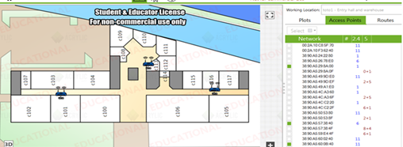
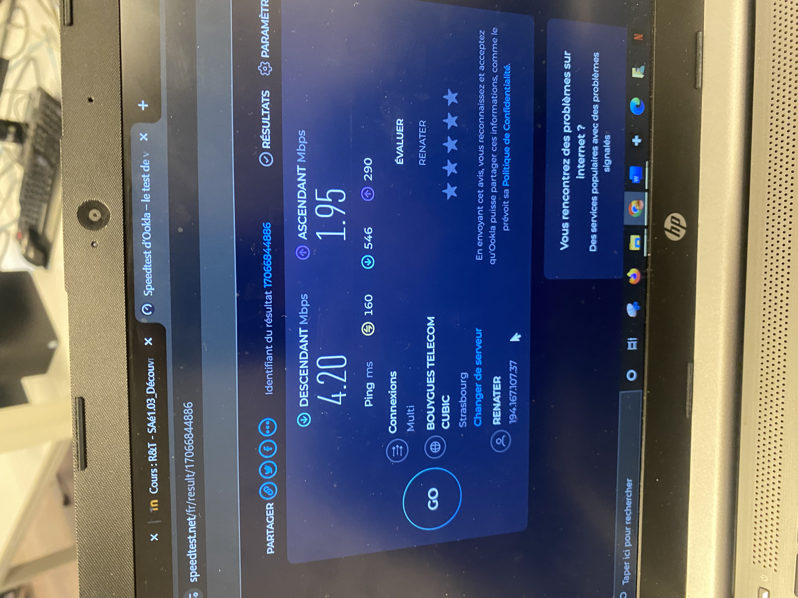
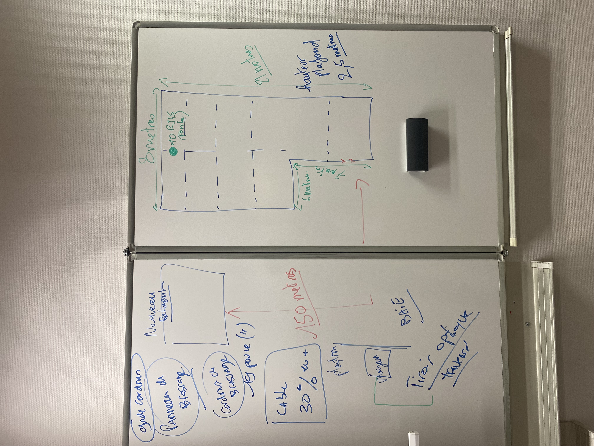
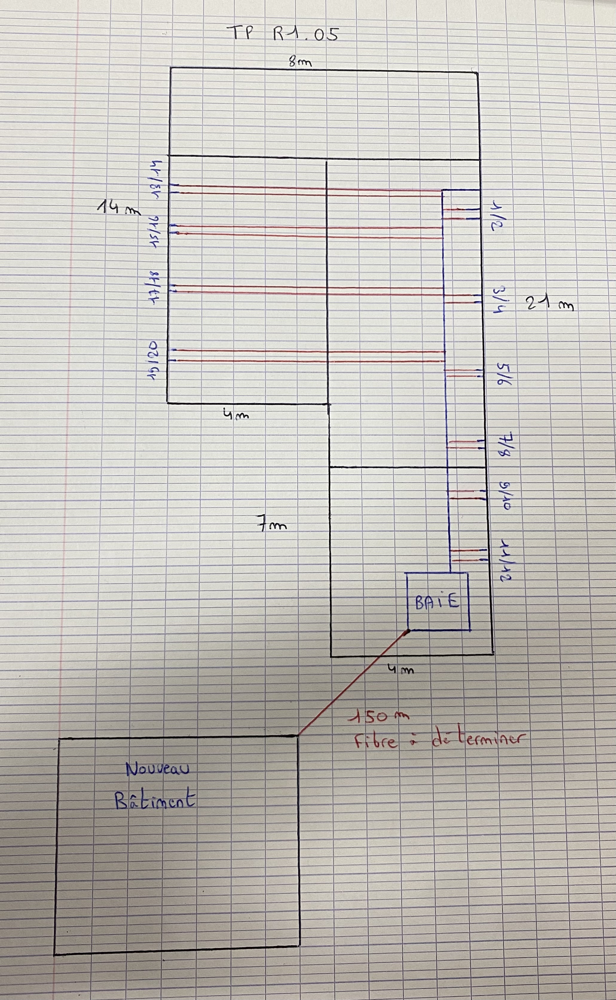

Compétences AC - Connecter les entreprises
- AC12.01 à AC12.05 | Mesure, analyse, ToIP, supports, communication client ( BUT 1 )
- AC22.01 à AC22.05 | Accès distant, multi-site, transmission complexe, cahier des charges ( BUT 2 )
- AC32.01 à AC32.05 | Connexions IP sécurisées, sans fil, fibre, projets collaboratifs ( BUT 3 )
SAÉ : Découvrir un dispositif de transmission (Wi-Fi, AP, RJ45)
Cette SAÉ nous a permis de découvrir le fonctionnement d’un réseau sans fil (Wi-Fi), l’analyse des canaux 2,4 et 5 GHz, l’implantation de points d’accès, l’utilisation d’un heatmap, ainsi que les bases du câblage RJ45 (normes T568A/B, noyaux, bandeaux, etc.).



Ressource R1.05 : Support de transmission pour réseaux locaux
Nous avons analysé les infrastructures nécessaires à une entreprise pour construire un nouveau bâtiment connecté : choix entre fibre monomode/multimode, distances, équipements passifs/actifs, création d’un devis complet avec justification technique et budgétaire.

